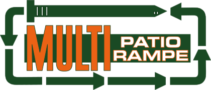
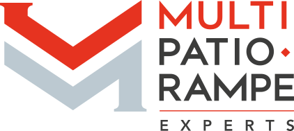

L’entreprise Multi Patio Rampe Experts est née de la fusion en 2021 de deux excellentes entreprises, Patios Rampes Expert et Multi Patio Rampe, fondées chacune il y a plus de 20 ans
Déjà plus de 20 ans dans le domaine
Multi Patio Rampe
C’est M. Roger Lessard qui est à l’origine de cette belle aventure. Cet homme perfectionniste, qui prend le temps de faire un travail soigné, peu importe la tâche, est un charpentier-menuisier de carrière. C’est en 1995 que Roger décide de se spécialiser dans le domaine du patio et saute à pied joint dans l’entreprenariat pour fonder Entreprises R. Lessard Inc. En 1999, Roger fait l’acquisition de l’entreprise Multi garde et ajoute la division rampes à son offre de service. L’entreprise s’installe quelques années plus tard sur le boulevard Wilfrid-Hamel, qui est toujours notre place d’affaires principale à ce jour. C’est après une dizaine d’années que l’entreprise est renommée Multi Patio Rampe.
Patios Rampes Expert
Cette entreprise a été fondée par M Roland Robitaille en 1998. À cette époque elle fabrique des balcons en fibre de verre à son usine situé sur la 3e avenue Est à Québec. C’est en 2006 que M Pierre Denis, alors directeur des ventes d’une usine de fibre de verre, en fait l’acquisition et se lance dans l’entrepreneuriat. Après un violent incendie qui détruit toute l’usine, Pierre la relocalise à Saint-Agapit. Jusqu’en 2010, l’usine de fibre de verre est en pleine croissance et les produits en aluminium prennent de plus en plus d’importance dans l’entreprise, ci-bien que Pierre vend l’usine pour se concentrer uniquement aux activités de distribution de fibre de verre et d’aluminium. Pierre poursuit alors son excellent travail de développement de la distribution auprès principalement des contracteurs.
C’est en 2015 que Sébastien Brousseau, comptable de formation, fait l’acquisition de l’entreprise et la renomme Patios Rampes Experts inc. L’entreprise déménage alors pour revenir au cœur de sa clientèle sur la rue Michel-Fragasso à Québec. Sébastien apprend les rudiments du métier avec Pierre et poursuit avec ce dernier la croissance de l’entreprise.
Multi Patio Rampe Experts
En 2018, Patios Rampes Experts Inc fait l’acquisition de Multi Patio Rampe et déménage ses opérations dans les locaux de cette dernière sur le boulevard Wilfrid-Hamel à Québec, qui est notre place d’affaires depuis.
En 2020, Erick Guérard se joint à l’équipe et devient actionnaire au début de 2021. Sébastien et Erick forment alors un duo solide pour amener l’entreprise au sommet de son secteur.

